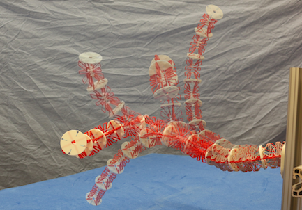
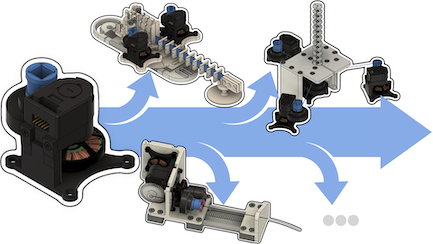
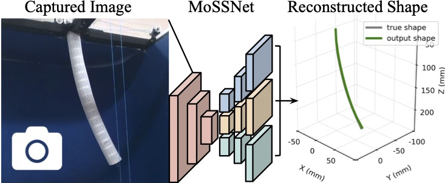

Selected Works

Aircraft Wing Inspection



Puspita Dewi is a M.Sc. student in the Mechanical and Industrial Engineering department at
the University of Toronto. She was previously a laboratory engineer at the Continuum Robotics
Laboratory. During her time as a lab engineer, she designed and prototyped various configurations
of continuum robots, such as a tendon driven continuum robot, a parallel continuum robot, and a
concentric tube continuum robot. This work motivated her to pursue graduate school to expand
her knowledge on continuum robotics and explore her interest in deploying continuum robots
for industry applications.
Puspita completed her bachelors’ degree at Institut Teknologi Bandung (ITB) in Indonesia,
majoring in aeronautics and astronautics engineering. Her bachelor’s research focused on
structural design and finite element analysis of a two-seater aircraft for a project in
collaboration between the university and the Indonesian government research and development
agency of transportation.